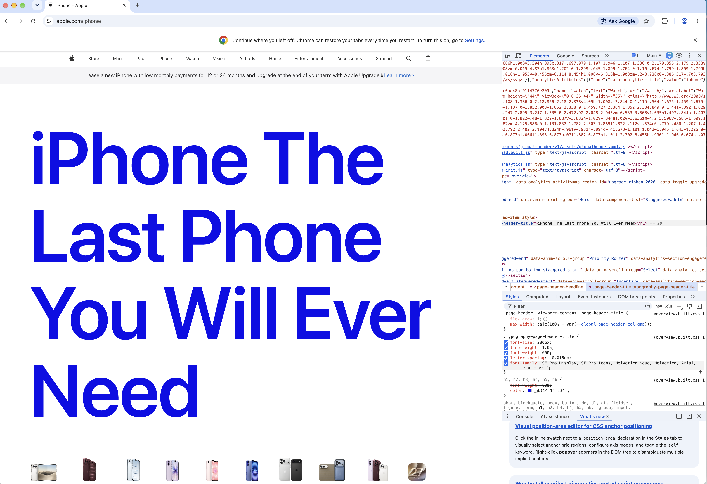

My Dev Tools Vandalism
I used browser developer tools to temporarily "vandalize" a website. Below is a screenshot showing my changes. These edits only appeared on my computer and did not affect the actual website.

What I "Vandalized"
Describe the changes you made to the website using the browser's developer tools. Some potential questions to consider:
- What text did you edit? I changed the word iPhone to iPhone The Last Phone You will Ever Need
- What CSS properties did you modify? I changed the font color from black to a purple color. I also Changed the font size to 200px so now it is oversized
- What made your edits interesting or amusing? After having many different iPhones I know that this Iphone will not be the last one i would buy. The purple font and oversize show that an abvious edit was made.
- Did you understand why some changes worked and some didn't? It took me some time to understand how to make the neccessary changes.
- Why did you choose the changes you did? They are obvious changes
- Were you able to understand how the HTML and CSS worked together to make the changes you made? Yes. The html changes the actual content and the CSS change the style.
- Do you think you have a better sense of how dev tools can be used while crafting your own webpages? Yes it is nice to see it work on an actual real world website.